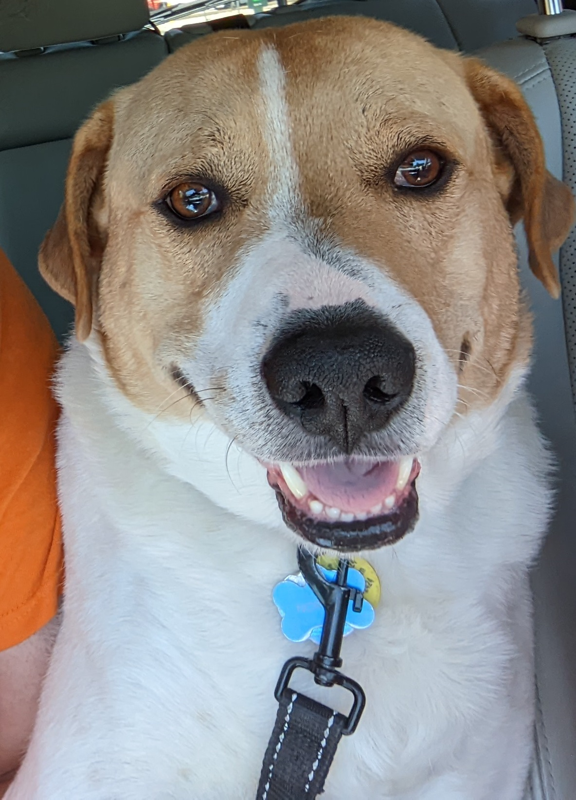
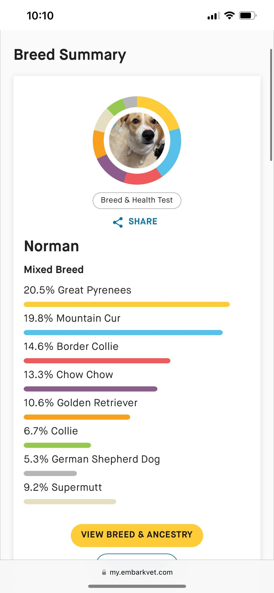

Meet our literal human son Normando

Breed: The Muttiest of all Mutts

Age: 4 years old
Personality: Fun/loving/slightly mentally impaired
Norman is a wonderful son. He always makes sure we are extra clean by licking us. He also is very protective of us even if he is all bark and no bite. He's a perfect son and we are lucky to have him.
Daily Routine
- Wake up and give a big stretch
- Lick Mom and Dad
- Move to the couch
- Wait by door until mom leaves
- Make mom feel bad about leaving
- Sleep
- Wait for Maddie to take me on the walk
- Go for a walk
- Get photo taken by Maddie
- Take a dump
- Go back to sleep
- Wake up when you hear keys jingle to unlock the door
- Lick Mom and Dad until bed time
- Hog the bed
- Repeat
Health and Wellness
Norman is in good health and has all of his vaccinations up to date. He eats a high-quality dog food and gets plenty of exercise. However Norman has a Coefficient of Inbreeding of 45% which the vet says means his parents were siblings.

Fun Facts and Anecdotes
- Norman loves to lick any skin that is exposed no matter what.
- He is a messy eater and loves to dump his dog bowl out all over the floor.
- Norman loves squishmellows.
Contact Information
If you are interested in telling us how amazing norman is please contact us
Email: truescout23@yahoo.com
If you want to be as good dog parents as we are here are some resources.
Resources for Dog Owners